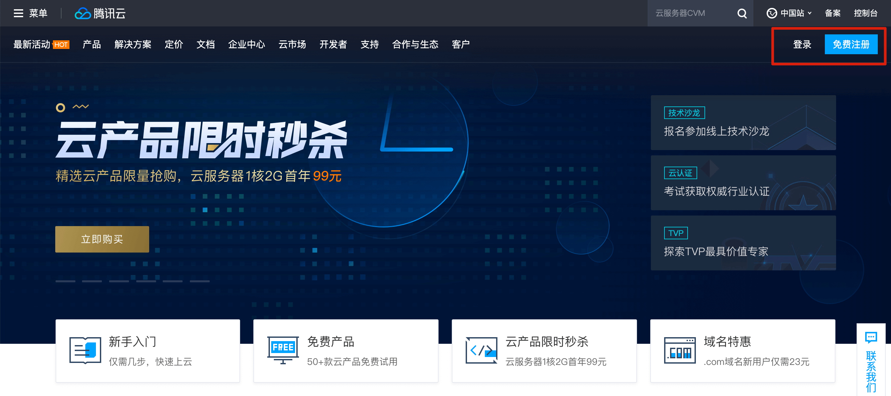
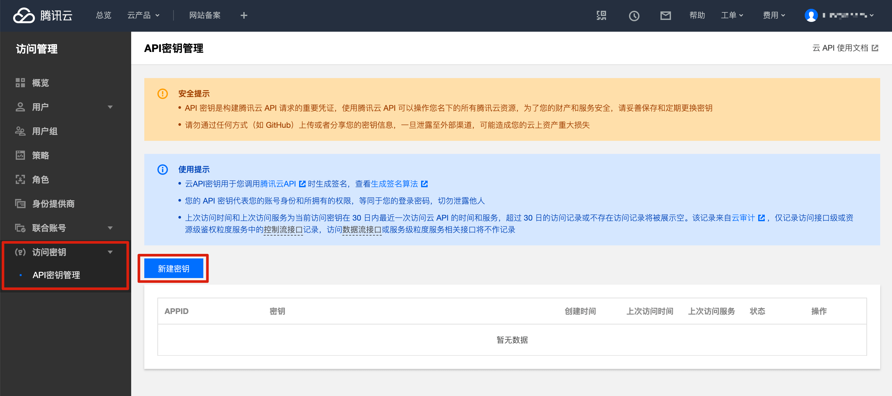
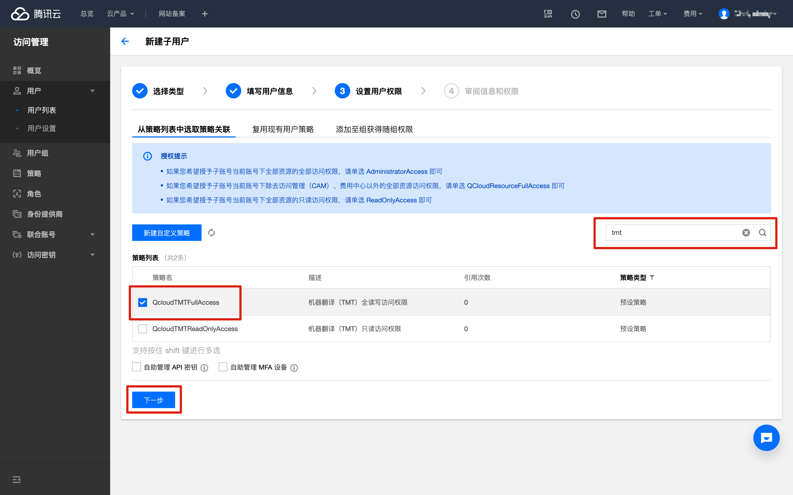
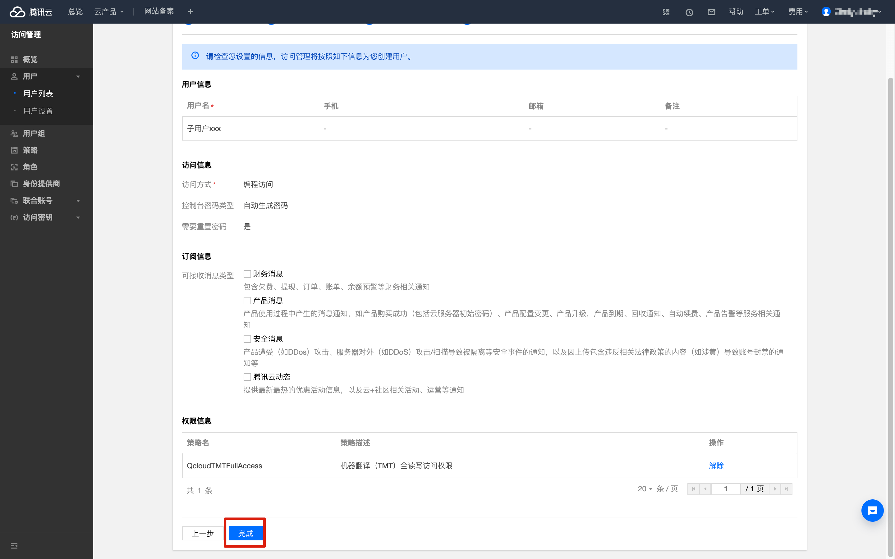
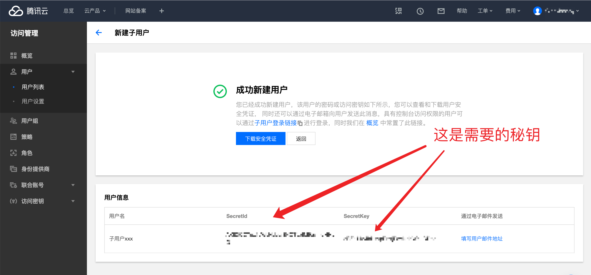
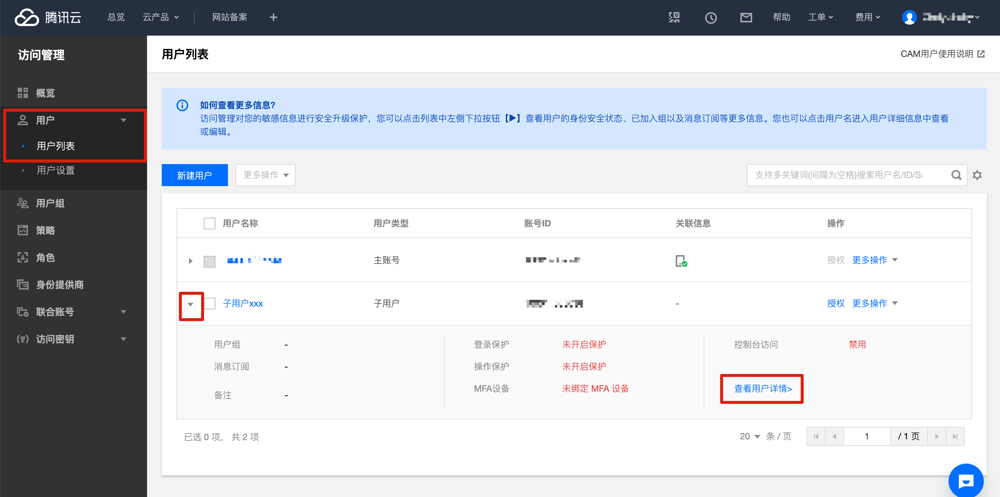

以下資訊僅供參考，請以服務商官網最新資訊為准。更新時間：2020年5月1日。
0.收費模式
| 服務 | 免費額度 | 超出免費額度 | 併發請求數 |
|---|---|---|---|
| 文字翻譯（開通免費試用） | 每月500萬字元👍 | 直接禁止使用，不會扣費 | 5次/秒 |
| 文字翻譯（開通付費版） | 每月500萬字元👍 | 58元/100萬字元 | 5次/秒 |
1.注册登入

2.個人認證
騰訊雲免費服務使用之前需要認證，普通用戶申請「個人認證」即可，如果已經認證，請直接跳過此步驟
進入「帳號資訊-查看或修改認證」，點擊「開始個人認證」

以下資訊如實填寫，然後點擊「下一步」

如下提示即代表認證成功

3.開通機器翻譯
如果進入機器翻譯頁面能直接看到運營數據，證明已開通，請直接跳過此步驟
進入「機器翻譯」頁面
如果只是想使用免費額度，直接點擊「免費試用」（每月免費額度使用完之後將直接無法使用，不會扣費）

如下提示即代表開通成功

4.獲取秘鑰
獲取秘鑰有兩個方法，方法1更快捷，方法2更安全，任選一個跟著操作就可以了。
注意，無論使用哪個管道獲取秘鑰，前面的步驟（個人認證、開通機器翻譯）都是需要操作的。如果不操作，即便獲取到了秘鑰也無法正常使用！
方法1（更快捷）
如果想更快捷地獲取秘鑰，可以直接獲取「主帳號」的秘鑰，該秘鑰可以直接訪問您帳戶下的所有騰訊雲資源。
進入「訪問管理-訪問秘鑰-API秘鑰管理」，點擊「新建秘鑰」
如果已有秘鑰，可直接使用，無需再新建

如下圖所示即所需的秘鑰

方法2（更安全）
如果想要更安全一些，可以創建一個「子用戶」，然後只給這個「子用戶」開啟訪問「機器翻譯」API的許可權
進入「訪問管理-用戶-用戶列表」，點擊「新建用戶」

點擊「自定義創建」

選擇「可訪問資源並接受消息」

用戶名隨意設定，勾選上「程式設計訪問」，其他的不用勾選，然後點擊「下一步」

在蒐索框輸入「tmt」即可快速找到「機器翻譯」相關服務，然後勾選上「QcloudTMTFullAccess」，點擊「下一步」

點擊「完成」

如下圖所示即為所需秘鑰

如果已經創建完「子用戶」，想重新查看秘鑰，則進入「訪問管理-用戶-用戶列表」，展開對應子用戶，然後點擊「查看用戶詳情」

點擊「API秘鑰」，下圖所示即可所需秘鑰
5.填寫秘鑰
在翻譯引擎管理頁面，點擊「騰訊翻譯」的「設定秘鑰」，然後將剛才獲取到的秘鑰填寫到對應位置即可。